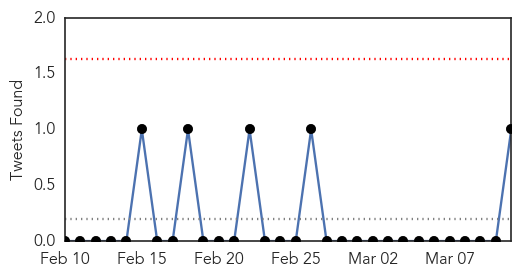
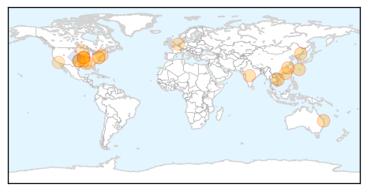
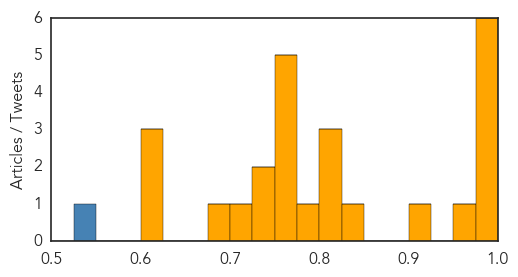

Unknown
30-Day Web Trend
1 alerts, 0 warnings

30-Day Twitter Trend
0 alerts, 0 warnings

Article Locations

Article Confidences

Top Articles:
- 0.991
- Ross River virus reduced thanks to lack of rain
- 0.970
- Mutating H7N9 bird flu may pose pandemic threat, scientists warn
- 0.969
- Mutating H7N9 bird flu may pose pandemic threat, scientists warn
- 0.967
- Mutating H7N9 bird flu may pose pandemic threat, scientists warn
- 0.967
- Mutating H7N9 bird flu may pose pandemic threat, scientists warn
- 0.966
- Mutating H7N9 bird flu may pose pandemic threat, scientists warn
- 0.917
- Chicago Tribune
- 0.917
- Chicago Tribune
- 0.917
- Chicago Tribune
- 0.917
- Chicago Tribune
- 0.917
- Chicago Tribune
- 0.917
- Chicago Tribune
- 0.917
- Chicago Tribune
- 0.917
- Chicago Tribune
- 0.917
- Chicago Tribune
- 0.917
- Chicago Tribune
- 0.917
- Chicago Tribune
- 0.917
- Chicago Tribune
- 0.917
- Chicago Tribune
- 0.917
- Chicago Tribune
- 0.917
- Chicago Tribune
- 0.917
- Chicago Tribune
- 0.917
- Chicago Tribune
- 0.917
- Chicago Tribune
- 0.917
- Chicago Tribune
- 0.917
- Chicago Tribune
- 0.917
- Chicago Tribune
- 0.917
- Chicago Tribune
- 0.917
- Chicago Tribune
- 0.910
- The world windows to Thailand
- 0.905
- H5N2 Bird Flu Confirmed In Two Missouri Turkey Facilities
- 0.903
- Radical vaccine design effective against herpes viruses
- 0.893
- Officials urged to stop HIV’s spread, National, Phnom Penh Post
- 0.865
- 100 Palestinians diagnosed with Brucellosis so far in 2015
- 0.856
- Water crisis surfaces memories of giardia outbreak in Tuna Valley: News
- 0.803
- Blinding Cases Of Syphilis On The West Coast Prompt Health Alert In LA County
- 0.790
- Poultry producers fall with avian flu discoveries
- 0.781
- Ohio State Representative John Patterson announces resolution to fight Lyme disease
- 0.774
- Ross River vaccine not considered financially viable to manufacture
- 0.759
- Hayward tuberculosis case draws health workers to school
- 0.744
- Military joins fight to contain typhoid
- 0.743
- Tuberculosis testing to take place Friday after confirmed case at Conway High
- 0.719
- Facing Up to Chronic Disease by George Weisz
- 0.702
- Parkland claims success in preventing hospital-associated infections
- 0.697
- Los Angeles DOH Reports 2 Cases Of Blinding Syphilis
- 0.688
- Raw Cashew Cheese Sickened 17 with Salmonella in 2014
- 0.675
- Ross River vaccine ‘not viable’
- 0.670
- Manning River Times
- 0.660
- State records sharp increase in HFMD cases – BorneoPost Online
- 0.627
- Bird flu found in second turkey flock in Missouri
Showing top 50 articles...
Top Tweets:
- 0.526
- Most indicators used to track flu severity are declining, but flu hospitalizations continue to be reported. http://t.co/o2Batjmisd
Influenza
30-Day Web Trend
0 alerts, 0 warnings

30-Day Twitter Trend
0 alerts, 0 warnings

Article Locations
Article Confidences
Top Articles:
- 0.997
- Fight against communicable diseases: Monkey, dog, duck cells used to culture flu vaccine faster- Nikkei Asian Review
- 0.988
- Pharmacies see rise in Tamiflu prescriptions
- 0.979
- Bird Flu Spreads Across China, Posing Threat to People
- 0.978
- Bird Flu Spreads Across China, Posing Threat to People: Report
- 0.976
- Doctor fears global flu pandemic "long overdue"
- 0.976
- Current bird flu in China could become ‘pandemic’ threat to humans, researchers say
- 0.974
- Flu Virus in China Has Pandemic Potential, Scientists Say
- 0.907
- Swine flu outbreak in India raises concern
- 0.848
- NW Arkansas turkeys test positive for avian flu
- 0.824
- Threatwatch: Bird flu's back and it's brought friends
- 0.822
- Avian Influenza Confirmed In Arkansas Turkey Flock
- 0.807
- Presence of bird flu strain locally marks first time it was found in Missouri
- 0.779
- Avian Influenza confirmed at 2nd turkey farm in Missouri
- 0.765
- Bird Flu Confirmed At Turkey Farm In Moniteau County
- 0.764
- Missouri's second H5N2 outbreak in turkeys confirmed
- 0.762
- Bird flu confirmed at Mid-Missouri turkey farm
- 0.751
- March 10, 2015 Archives
- 0.751
- March 10, 2015 Archives
- 0.730
- Bird Flu Confirmed In Two Missouri Flocks
- 0.728
- Meet Robert Kennedy Jr. in Atlanta for ‘Trace Amounts’ screening Thursday March 12
- 0.708
- Cargill affected by spread of bird flu
- 0.688
- USAID helps VN to fight emerging contagious diseases
- 0.617
- H5N2 Avian Influenza Virus Infects More Missouri Turkey Growing Facilities, MDA Confirms
- 0.614
- Avian Flu Found on Turkey Farms Supplying Butterball
- 0.610
- USAID helps Vietnam prevent emerging contagious diseases
Top Tweets:
- 0.785
- RT: Influenza news: H7N9 bird flu has the makings of a pandemic virus, scientists warn http://t.co/lKjuWxTiEd pathogenposse
- 0.755
- Influenza Surveillance: 20142015 H1N1 Swine-Derived Influenza Viruses from India http://t.co/UpnalCra11